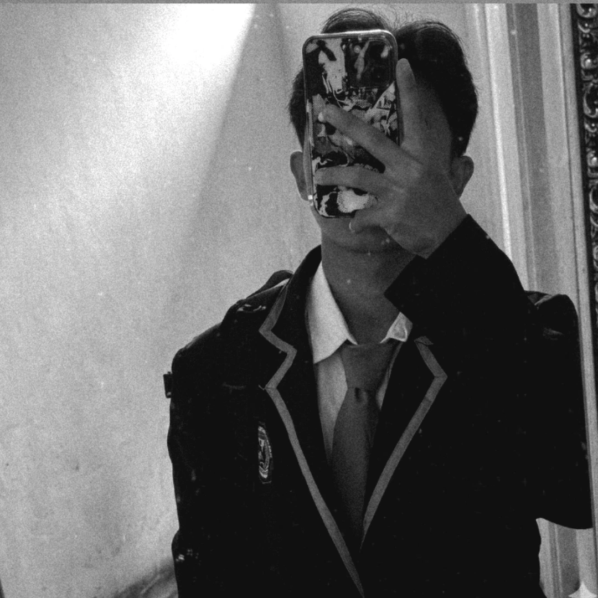
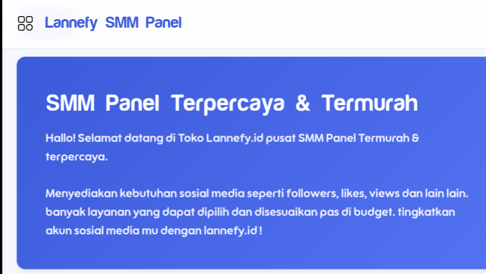

Perkenalkan nama saya Muhamad Sutarja. Lulusan baru dari SMK Teknik Bakti Persada dengan jurusan Teknik Komputer dan Jaringan (TKJ).
Saya memiliki minat yang tinggi di bidang teknologi dan siap untuk terus belajar dan berkembang.
 ahmdzxxmoder@gmail.com
ahmdzxxmoder@gmail.com +62 831-7180-4227
+62 831-7180-4227 @ejaa.muhmm4d
@ejaa.muhmm4dSaya memiliki minat untuk berkarier sebagai Data Entry, didukung dengan kemampuan dasar dalam pengolahan data dan penggunaan Microsoft Excel. Dengan ketelitian tinggi dan semangat belajar, saya siap untuk terus meningkatkan skill yang saya miliki agar dapat berkembang lebih baik.
Experience
Praktik Kerja Industri (PRAKERIN)
Toko Barokah Service ComputerMembantu proses perbaikan, pemeliharaan komputer, serta pengelolaan data toko secara sistematis menggunakan microsoft excel
Project Membangun Bisnis Digital
Membangun project web pertama saya dengan memanfaatkan bantuan AI sebagai langkah awal dalam mengembangkan kemampuan di bidang digital. Melalui proses ini, saya belajar memahami alur pembuatan web, meningkatkan problem solving, serta mengoptimalkan penggunaan teknologi AI untuk menghasilkan solusi yang lebih efektif dan efisien.
Pencatatan data bisnis digital
Melakukan pencatatan data penjualan secara sistematis dan terstruktur guna memastikan keakuratan serta kerapihan data. Proses ini membantu dalam mempermudah pengolahan, analisis, dan pencarian data pembeli.
Skills
Pengetahuan dasar komputer
Pemahaman dalam mengoperasikan, merakit hardware, hingga instalasi sistem operasi secara optimal.
Data entry
Memiliki keterampilan dalam data entry dengan tingkat ketelitian dan akurasi yang tinggi, serta mampu mengelola data secara sistematis dan terstruktur. Berpengalaman menggunakan Microsoft Excel untuk proses input, pengolahan, serta validasi data guna memastikan kualitas dan konsistensi informasi yang dihasilkan.
AI Prompting
Memiliki keterampilan dalam AI Prompting dengan kemampuan merancang instruksi yang terstruktur dan spesifik guna mengoptimalkan kinerja AI. Mampu meningkatkan kualitas output melalui penyusunan prompt yang efektif, analisis hasil, serta iterasi berkelanjutan untuk mencapai hasil yang lebih akurat, konsisten, dan sesuai kebutuhan.
Front-end Developer
Memiliki kemampuan sebagai Frontend Developer dalam mengembangkan antarmuka website yang responsif, interaktif, dan user-friendly. Menguasai dasar HTML, CSS, dan JavaScript untuk membangun tampilan yang terstruktur serta mengoptimalkan pengalaman pengguna. Terbiasa memanfaatkan teknologi dan tools pendukung, termasuk AI, untuk meningkatkan efisiensi dalam proses pengembangan.
Projects

Lannefy.id
Lannefy.id merupakan project web berbasis bisnis digital yang berfokus pada penyediaan layanan peningkatan followers dan engagement media sosial. Platform ini dirancang sebagai solusi yang efisien dan terstruktur untuk membantu meningkatkan performa serta kredibilitas akun secara optimal. Dalam pengembangannya, saya berperan dalam membangun sistem serta tampilan antarmuka yang responsif dan mudah digunakan, sekaligus memastikan alur layanan berjalan secara efektif. Project ini menjadi langkah awal saya dalam mengembangkan kemampuan di bidang pengembangan web dan digital services dengan pendekatan yang berorientasi pada kualitas dan pengalaman pengguna.
Lihat ProjectServices
Data Management
Jasa penginputan dan pengolahan data Excel.
Web Design & Dev
Pembuatan landing page minimalis dan responsif untuk kebutuhan personal/bisnis.
IT Support
Perawatan hardware, perakitan, dan instalasi sistem operasi komputer.

Jasa Up Account Social Media
menyediakan layanan peningkatan engagement media sosial secara cepat dan aman untuk mendukung pertumbuhan akun bisnis/pribadi.
Google Console Setup
Optimasi visibilitas digital melalui integrasi Google Search Console dan struktur Meta Tags. Memastikan website Anda masuk ke radar mesin pencari dengan tampilan tautan yang lebih menarik.